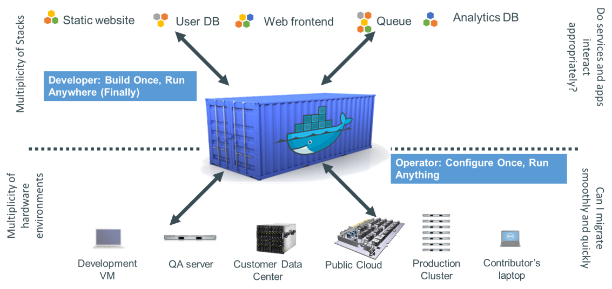
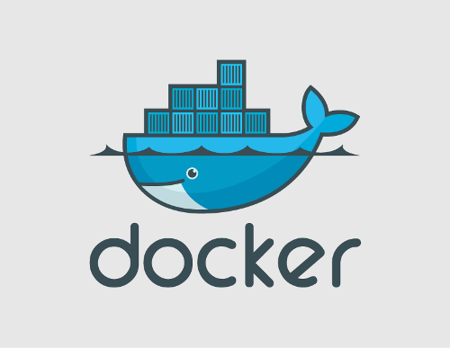

Let's talk about cargo shipping!
Let's talk about cargo shipping!
- Goods shouldn't worry about cargo
- Destination shouldn't matter (from goods perspective)
- Multiple goods types
- Goods should not interact
- The whole process should be transparent for them
Goods can be packed into containers!
Software can be packed into Docker containers!

Let's talk about Docker!

What is Docker?
Docker is an open platform for developers and sysadmins to build, ship, and run distributed applications.
Thanks to Docker, IT can ship faster and run the same app, unchanged, on laptops, data center VMs, and any cloud.
What Docker brings to the table?
- Containers in layers (storing diffs only)
- Reusable layers (across images)
- Using images filesystems (chroot)
- Separate process space
- Specific network interface
- Support for ephemeral containers
- Public and free Docker registry (repository)
Docker is not a next VMware
- Processes run by Docker share the host kernel
- No devise emulation
- Architectures and platforms between host and container must match
- Since we need only a valid kerner (>= 3.8), Distro doesn't matter
Let's talk about building images!
FROM ruby:2.2.1-onbuild
RUN mkdir -p /usr/src/app
WORKDIR /usr/src/app
ONBUILD COPY Gemfile /usr/src/app/
ONBUILD COPY Gemfile.lock /usr/src/app/
ONBUILD RUN bundle install
ONBUILD COPY . /usr/src/app
docker build -t "app_name:tags" ./path
Let's talk about Ruby apps images!
- Ain't so easy :-(
- Apps are not single process based anymore
- It is a bit more complex for bigger apps
- Doesn't work with private git repositories
- Doesn't work with private gems
- Doesn't work without exposing a SSH key
- Too much caching
- Bundler is a pain in the ass
But why?
Most of the troubles comes from how Docker build works
Almost everything can be fixed or bypassed
Bigger apps - more images
- Multi process images are not scalable
- Who needs to scale crontab? ;)
- There's no strict rule on how many Pumas, Sidekiqs, etc, will we need
- Single process images can be used to scale in any direction
Multiple images mean multiple Dockerfiles
Instead of playing with Docker let's fix that in Ruby - simple templates and a bit of magic:
name = "#{@app.container_name(:base)}:#{@app.build_tag}"
generator.build(:base)
system "docker build -t='#{name}' #{@app.location}"
@app.services.each do |type, enabled|
next unless enabled
generator.build(type)
name = "#{@app.container_name(type)}:#{@app.build_tag}"
system "docker build -t='#{name}' #{@app.location}"
system "docker tag #{name} #{@app.container_name(type)}:latest"
end
Multiple images mean multiple Dockerfiles
# docker images | grep facebook
registry/facebook_api_production_base latest
registry/facebook_api_production_mongoid latest
registry/facebook_api_production_puma latest
registry/facebook_api_production_sidekiq latest
registry/facebook_api_production_whenever latest
Dynamically generated templates will allow you to invalidate cache
whenever you want (too much caching issue solved).
Private Git stuff (apps and gems)
- No easy way to injest your stuff to /etc/hosts
- Docker will cache your SSH key
- If it is cached it will be pushed
- If it was pushed it will be in the image
- If it is in the image it will be in the container
- If it is in the container someone might get it
Fat bundler issue
- Private gems require SSH key which invalidates cache
- Security vs build performance
- Local gem cache server as one of the solution (in development)
- Base image with system wide most used gems to speed up bundle install